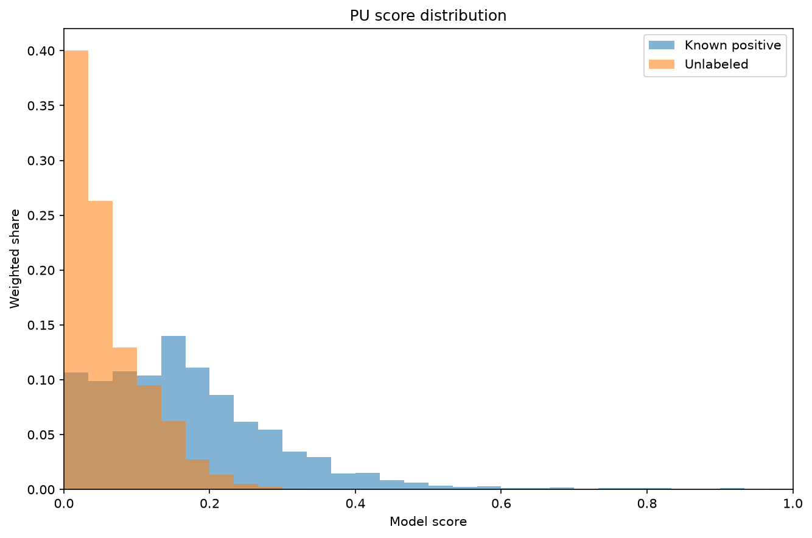
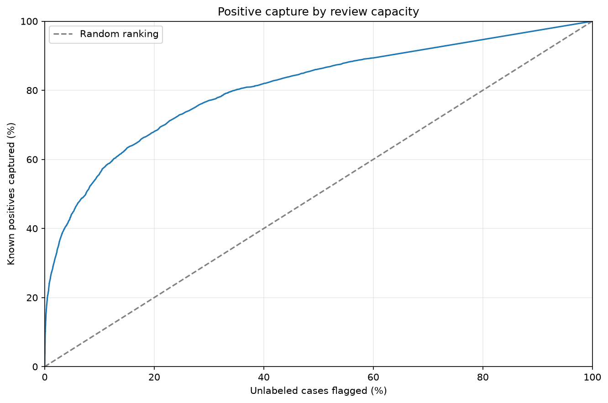

Positive-unlabeled¶
Use the original LINQS Cora archive for an observed-link retrieval example: 2,708 real papers, their 1,433 binary word indicators, and all 5,429 recorded directed citations. Recorded links are known positives. The loader selects 20,000 distinct unrecorded directed pairs as unverified candidates; their citation status is unknown.
Scores are cosine similarities between the source word vectors. They are
retrieval scores in [0, 1], without a probability interpretation or fitted PU
classifier. Cora's published document classes are unused. This constructs an
open-world citation retrieval example; the sampled candidate ratio does not
estimate citation prevalence.
From an installed source checkout, prepare the original citation source first:
python -m pip install -r requirements-examples.txt
python -m examples.prepare_data --dataset cora
from pathlib import Path
from ml_toolkit.config import FigureConfig
output = Path("figures")
figure = FigureConfig(dpi=150)
from examples.citation_data import load_citation_gallery
from ml_toolkit.plots import pu
citations = load_citation_gallery(download_if_missing=False)
pu_labels, pu_scores = (citations.labels, citations.scores)
pu.score_distribution(
pu_labels, pu_scores, output / "pu-distribution.png", figure=figure
)
print(
f"Cora: {citations.paper_count} papers, {citations.known_citation_count} recorded citations, {citations.unlabeled_pair_count} unverified candidate pairs"
)
Cora: 2708 papers, 5429 recorded citations, 20000 unverified candidate pairs

Inspect Cora records, candidate selection, and similarity scoring
"""Real observed-link ranking data from the original LINQS Cora archive.
Recorded citations are positive observations. Other directed paper pairs are
unlabeled candidates: a missing record is not evidence of a confirmed negative.
This is an open-world retrieval illustration, not an author-provided PU
benchmark. Scores are cosine similarities between the original binary word
vectors, not calibrated citation probabilities or a fitted PU classifier.
"""
from __future__ import annotations
from dataclasses import dataclass
from hashlib import sha256
from io import BytesIO
import logging
from pathlib import Path
from tarfile import TarInfo, open as open_tar
from tempfile import TemporaryDirectory
from urllib.error import URLError
from urllib.request import urlopen
import numpy as np
from ml_toolkit.types import FloatArray, IntArray
CORA_URL = "https://linqs-data.soe.ucsc.edu/public/lbc/cora.tgz"
CORA_MIRROR = (
"https://raw.githubusercontent.com/tkipf/pygcn/"
"1600b5b748b3976413d1e307540ccc62605b4d6d/data/cora"
)
CORA_FILE_HASHES = {
"cora.content": "b8ebed0fd45e53995abafd1b70cf6a9fcc8f86abc5826d69b97fe6ca46e9c8ee",
"cora.cites": "ec1a372391b7f0f60a6aff0084e8abd8f19f0faa7e1f2441a41c492042d5945e",
}
DEFAULT_CITATION_CACHE = Path(__file__).resolve().parents[1] / ".cache/linqs-cora"
logger = logging.getLogger(__name__)
@dataclass(frozen=True)
class CitationGallery:
"""Store recorded citations and unverified candidates with content scores.
Attributes
----------
labels : FloatArray
One for recorded citations and zero for unlabeled candidate pairs.
scores : FloatArray
Aligned cosine word-vector similarities in [0, 1].
pairs : tuple[tuple[str, str], ...]
Directed (citing paper ID, cited paper ID) pairs. Recorded links precede
candidates; no pair is repeated and no paper is paired with itself.
known_citation_count, unlabeled_pair_count : int
Numbers of preserved source links and sampled candidate pairs.
paper_count, feature_count : int
Number of real source papers and binary word indicators per paper.
"""
labels: FloatArray
scores: FloatArray
pairs: tuple[tuple[str, str], ...]
known_citation_count: int
unlabeled_pair_count: int
paper_count: int
feature_count: int
def citation_cache_available(cache_dir: Path | None = None) -> bool:
"""Check for the source archive without downloading or writing files.
Parameters
----------
cache_dir : pathlib.Path or None, default None
Cache directory; None uses .cache/linqs-cora in the repository.
Returns
-------
bool
Whether the selected directory contains cora.tgz.
"""
directory = DEFAULT_CITATION_CACHE if cache_dir is None else cache_dir
return (directory / "cora.tgz").is_file()
def _download_source(path: Path) -> None:
try:
with urlopen(CORA_URL, timeout=30) as response:
original = response.read()
except (URLError, TimeoutError) as error:
logger.warning("Cora source unavailable (%s); using pinned pygcn mirror", error)
with open_tar(path, "w:gz") as archive:
for name, expected in CORA_FILE_HASHES.items():
with urlopen(f"{CORA_MIRROR}/{name}", timeout=30) as response:
content = response.read()
if sha256(content).hexdigest() != expected:
raise ValueError(f"Cora mirror checksum mismatch for {name}")
member = TarInfo(f"cora/{name}")
member.size = len(content)
archive.addfile(member, BytesIO(content))
else:
path.write_bytes(original)
def _source_records(
cache_dir: Path, download_if_missing: bool
) -> tuple[tuple[str, ...], FloatArray, IntArray]:
path = cache_dir / "cora.tgz"
if not path.is_file():
if not download_if_missing:
raise FileNotFoundError(f"Cora data is not cached at {path}")
cache_dir.mkdir(parents=True, exist_ok=True)
with TemporaryDirectory(prefix="cora-download-", dir=cache_dir) as temporary:
downloaded = Path(temporary) / "cora.tgz"
_download_source(downloaded)
downloaded.replace(path)
with open_tar(path, "r:gz") as archive:
content = archive.extractfile("cora/cora.content")
citations = archive.extractfile("cora/cora.cites")
if content is None or citations is None:
raise ValueError("The Cora archive must contain its content and citation files")
rows = [line.split() for line in content.read().decode("utf-8").splitlines()]
raw_links = [line.split() for line in citations.read().decode("utf-8").splitlines()]
paper_ids = tuple(row[0] for row in rows)
if len(set(paper_ids)) != len(paper_ids):
raise ValueError("Cora paper IDs must be unique")
features = np.asarray([row[1:-1] for row in rows], dtype=np.float64)
if features.ndim != 2 or not len(features) or features.shape[1] == 0:
raise ValueError("Cora word vectors must be a nonempty matrix")
if not np.isin(features, [0.0, 1.0]).all() or (features.sum(axis=1) == 0).any():
raise ValueError("Cora word vectors must be binary and have positive norm")
positions = {paper_id: index for index, paper_id in enumerate(paper_ids)}
# The source README stores each citation as (cited ID, citing ID).
# Retain source order and remove exact duplicate directed records only.
links = tuple(dict.fromkeys((positions[citing], positions[cited]) for cited, citing in raw_links))
if any(citing == cited for citing, cited in links):
raise ValueError("Cora recorded citations must not contain self-links")
return paper_ids, features, np.asarray(links, dtype=np.int64)
def _candidate_pairs(
observed: IntArray, paper_count: int, count: int
) -> IntArray:
recorded = {tuple(pair) for pair in observed.tolist()}
available = paper_count * (paper_count - 1) - len(recorded)
if not 1 <= count <= available:
raise ValueError("unlabeled_pair_count must fit the unrecorded non-self pairs")
generator = np.random.default_rng(42)
candidates: list[tuple[int, int]] = []
selected: set[tuple[int, int]] = set()
while len(candidates) < count:
draws = generator.integers(0, paper_count, size=(2 * (count - len(candidates)), 2))
for citing, cited in draws.tolist():
pair = (citing, cited)
if citing != cited and pair not in recorded and pair not in selected:
selected.add(pair)
candidates.append(pair)
if len(candidates) == count:
break
return np.asarray(candidates, dtype=np.int64)
def load_citation_gallery(
*,
cache_dir: Path | None = None,
download_if_missing: bool = True,
unlabeled_pair_count: int = 20_000,
) -> CitationGallery:
"""Score real citations and unverified candidate pairs by word similarity.
Parameters
----------
cache_dir : pathlib.Path or None, default None
Cache directory for the original archive. None uses .cache/linqs-cora.
download_if_missing : bool, default True
Allow downloading the LINQS archive, with a pinned, checksum-verified
pygcn mirror as fallback. False raises for a missing cache without
making network requests or writing files.
unlabeled_pair_count : int, default 20000
Number of distinct absent directed pairs sampled uniformly with seed 42.
Must be positive and fit the available non-self, unrecorded pairs.
Returns
-------
CitationGallery
All 5,429 recorded citations and sampled unverified candidate pairs,
aligned with cosine similarity scores from 1,433 source word indicators.
Notes
-----
Reads only cora.content and cora.cites; archive paths are never extracted.
Topic labels are ignored. Candidate sampling never alters or hides observed
citation labels and never uses the similarity scores. No prior prevalence,
supervised labels, invented dates, or simulated feature values are used.
A sampled candidate set does not estimate the prevalence of real citations.
"""
directory = DEFAULT_CITATION_CACHE if cache_dir is None else cache_dir
paper_ids, features, observed = _source_records(directory, download_if_missing)
candidates = _candidate_pairs(observed, len(paper_ids), unlabeled_pair_count)
pairs = np.concatenate((observed, candidates))
norms = np.linalg.norm(features, axis=1)
scores = np.empty(len(pairs), dtype=np.float64)
# Batches keep the two indexed word-vector matrices bounded in memory.
for start in range(0, len(pairs), 1024):
batch = pairs[start:start + 1024]
left, right = batch[:, 0], batch[:, 1]
numerator = np.einsum("ij,ij->i", features[left], features[right])
scores[start:start + len(batch)] = numerator / (norms[left] * norms[right])
scores = np.clip(scores, 0.0, 1.0)
return CitationGallery(
labels=np.concatenate((np.ones(len(observed)), np.zeros(len(candidates)))),
scores=scores,
pairs=tuple((paper_ids[int(citing)], paper_ids[int(cited)]) for citing, cited in pairs),
known_citation_count=len(observed),
unlabeled_pair_count=len(candidates),
paper_count=len(paper_ids),
feature_count=features.shape[1],
)
pu.positive_capture(
pu_labels, pu_scores, output / "pu-capture.png", figure=figure
)

Both calls return None. Histograms normalize the recorded-link and candidate
sets separately. Capture plots show recorded citations recovered as the
unverified review fraction increases. Missing records are not confirmed
negative citations, and capture on this graph does not establish recall for
all real citations. Both axes show percentages; tied scores enter together.
Reports in a PU training workflow¶
PUScoreDistribution(histogram_bins=30) separates score distributions for known
positives and unlabeled rows, normalizing each group independently.
PUPositiveCapture() plots known-positive capture against the unlabeled
fraction reviewed. Both use row weights and only the current held-out split.
They require both groups to have positive total weight. The distribution's
histogram_bins controls score bins; capture processes tied scores together.
For an existing project PU workflow, add the following evaluators. The callable below requires your actual chronologically ordered PU pool, model parameters, and population prior; the Cora illustration above supplies no training dates or population prior and is not used to fabricate a PU training run.
from ml_toolkit import train_model
from ml_toolkit.config import TrainingConfig
from ml_toolkit.data import Pool
from ml_toolkit.evaluation import PUScoreDistribution, PUPositiveCapture
from ml_toolkit.metrics import PUMetric
from ml_toolkit.models import CatBoostPUClassificationModel
from ml_toolkit.training import Holdout
from ml_toolkit.types import ModelParams
def train_pu_reports(data: Pool, *, prior: float, params: ModelParams):
return train_model(
splitter=Holdout(data, val_size=0.2, test_size=0.2),
params={**params, "pu_prior": prior, "loss": "nnPU"},
model_factory=CatBoostPUClassificationModel,
metric=PUMetric(prior=prior, loss="nnPU"),
run_name="pu-reports",
config=TrainingConfig(),
prediction_evaluators=[PUScoreDistribution(), PUPositiveCapture()],
)
In a test run the files are pu_score_distribution/test/pu_score_distribution.png
and pu_positive_capture/test/pu_positive_capture.png; validation uses val/.
The displayed Cora figures illustrate the same direct plotting functions used
by those evaluators, using the stated retrieval scores rather than a fitted PU
model. A prior is a population prevalence assumption, not the labeled fraction.
API reference¶
PUScoreDistribution
dataclass
¶
PUScoreDistribution(
*,
name: str = "pu_score_distribution",
histogram_bins: int = 30
)
Bases: PredictionEvaluator
Compare score distributions for known positives and unlabeled rows.
Parameters:
| Name | Type | Description | Default |
|---|---|---|---|
name
|
str
|
Unique report name and artifact namespace. |
'pu_score_distribution'
|
histogram_bins
|
int
|
Number of score bins. |
30
|
Notes
Labels 1 and 0 mean known positive and unlabeled. Each group's weighted
histogram is normalized separately; both need positive total weight.
Uses validation or test rows and saves
<split>/pu_score_distribution.<format>.
PUPositiveCapture
dataclass
¶
PUPositiveCapture(*, name: str = 'pu_positive_capture')
Bases: PredictionEvaluator
Plot known-positive capture against unlabeled review capacity.
Parameters:
| Name | Type | Description | Default |
|---|---|---|---|
name
|
str
|
Unique report name and artifact namespace. |
'pu_positive_capture'
|
Notes
Labels 1 and 0 mean known positive and unlabeled. Both axes use weighted
percentages; tied scores enter together. Capture is not recall for all
positives without assumptions about labeling. Uses validation or test rows
and saves <split>/pu_positive_capture.<format>.
pu ¶
Plots for positive–unlabeled evaluation.
score_distribution ¶
score_distribution(
labels: ArrayLike,
probabilities: ArrayLike,
save_fig: str | Path,
*,
weights: ArrayLike | None = None,
histogram_bins: int = 30,
figure: FigureConfig | None = None
) -> None
Save score distributions for known positives and unlabeled rows.
Parameters:
| Name | Type | Description | Default |
|---|---|---|---|
labels
|
array-like of shape (n_samples,)
|
1 identifies a known positive; 0 identifies an unlabeled observation. |
required |
probabilities
|
array-like of shape (n_samples,)
|
Finite model scores in [0, 1]. |
required |
save_fig
|
str or Path
|
Output figure path; parent directories are created. |
required |
weights
|
array - like or None
|
Finite, nonnegative aligned weights with positive total in each group; None uses equal weights. |
None
|
figure
|
FigureConfig or None
|
Optional export dimensions, DPI, and format. None preserves native dimensions and the requested path format. |
None
|
histogram_bins
|
int
|
Positive count of equal-width score bins. |
30
|
Returns:
| Type | Description |
|---|---|
None
|
The figure is saved to disk; no table is returned. |
Raises:
| Type | Description |
|---|---|
ValueError
|
Inputs are empty, invalid, misaligned, or a group has no positive weight. |
Notes
Creates parent directories for save_fig and closes the figure after saving. Histograms use histogram_bins equal-width bins in [0, 1] and normalize weights within each group. Unlabeled rows are not confirmed negatives.
positive_capture ¶
positive_capture(
labels: ArrayLike,
probabilities: ArrayLike,
save_fig: str | Path,
*,
weights: ArrayLike | None = None,
figure: FigureConfig | None = None
) -> None
Save known-positive capture against unlabeled review capacity.
Parameters:
| Name | Type | Description | Default |
|---|---|---|---|
labels
|
array-like of shape (n_samples,)
|
1 identifies a known positive; 0 identifies an unlabeled observation. |
required |
probabilities
|
array-like of shape (n_samples,)
|
Finite model scores in [0, 1]. |
required |
save_fig
|
str or Path
|
Output figure path; parent directories are created. |
required |
weights
|
array - like or None
|
Finite, nonnegative aligned weights with positive total in each group; None uses equal weights. |
None
|
figure
|
FigureConfig or None
|
Optional export dimensions, DPI, and format. None preserves native dimensions and the requested path format. |
None
|
Returns:
| Type | Description |
|---|---|
None
|
The figure is saved to disk; no table is returned. |
Raises:
| Type | Description |
|---|---|
ValueError
|
Inputs are empty, invalid, misaligned, or a group has no positive weight. |
See Also
ml_toolkit.metrics.positive_capture_curve : Calculate the underlying fractions.
Notes
Creates parent directories for save_fig and closes the figure after saving. Cutoffs include all tied scores. Both axes show percentages; capture approximates recall only under representative positive labeling.